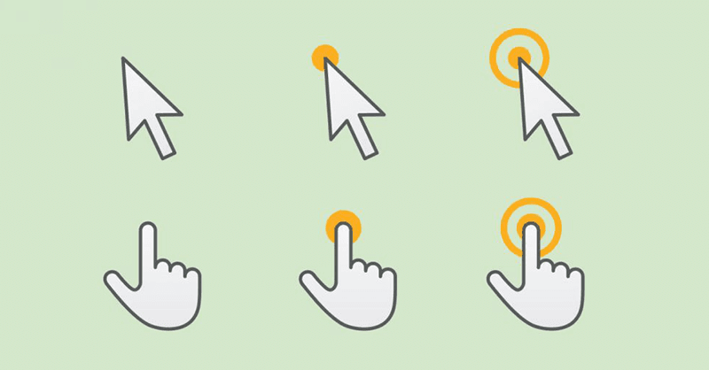
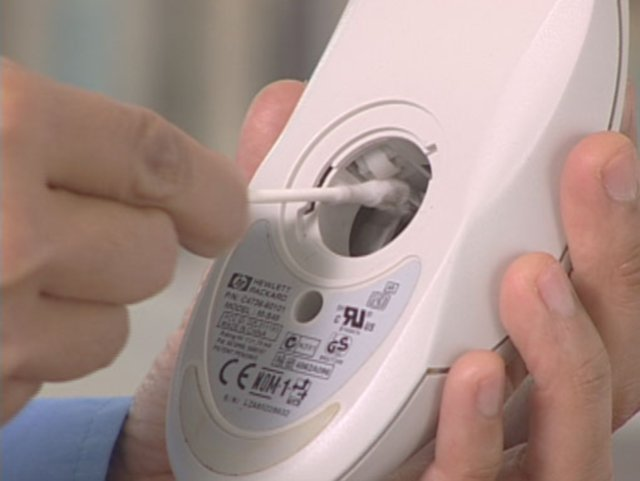

Funcionamiento
El funcionamiento de un ratón depende de la tecnología utilizada para capturar el movimiento al ser
desplazado sobre una superficie plana o alfombrilla especial para ratón, y transmitir esta información para
mover una flecha o puntero sobre el monitor de la computadora

Mantenimiento Necesario
Para ratones de bola:
Primeramente, desconectamos el mouse del PC y lo colocamos sobre una mesa limpia. Luego, procedemos a limpiar
el mousepad con un paño húmedo y posteriormente la parte superficial del mouse y el cable, para retirar
polvo y suciedad
Seguidamente, volteamos el mouse y con ayuda de un destornillador retiramos la tapa que soporta la bola
rotatoria del dispositivo
Una vez retirada la bola, la limpiamos con un paño seco y tomamos la carcasa del mouse. Veremos unos pequeños
rodillos donde la bola hace su movimiento giratorio, retiramos la suciedad de estos rodillos utilizando el
destornillador o una espátula pequeña. Este procedimiento debe hacerse con mucho cuidado para no dañar la
superficie de los rodillos
Con un hisopo o trozo de algodón humedecido con alcohol, retiramos el exceso de suciedad de los pequeños
rodillos
Colocamos nuevamente la bola en su lugar y la aseguramos colocando la tapa que la soporta junto a su tornillo
Para ratones ópticos:
El procedimiento es similar sólo que no encontraremos una bola cuando retiremos la tapa inferior, sino que en
su lugar, encontraremos un lente circular que emite los rayos de lectura del mouse
Con un pequeño trozo de algodón o un hisopo humedecido con alcohol, limpiamos con suavidad y mucho cuidado la
superficie del lente. Al terminar, procedemos a colocar la tapa inferior del mouse y el proceso de limpieza
habrá terminado
